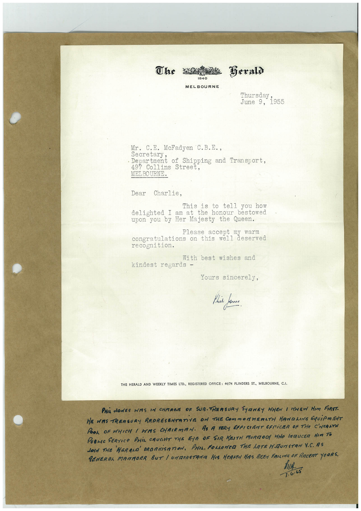

Book 1 · scan 089


Description
Transcription
Context
Review notes
Compare the machine draft with the scan. Handwriting and names need human review.
Artifacts
Edit the artifacts field in this note’s frontmatter to change these records. This summary is generated.
B01-S089-A01 — Letter & Handwritten note — Book 1, scan 089
Types: Typed document, Letter, Handwritten note
Scope: Whole scanned page; individual items can be split out during review.
Caption: Not mapped yet.
Caption source: Not recorded yet.
Caption status: unmapped
Machine transcription
The Beraly 1840 MELBOURNE 'hursday; June 9, 1955 Mr. C.E. McFadyen C.B.E., • Department of Shipping and Transport. 497 Collins Street, MELBOURNE. Dear Charlie, This is to tell you how delighted I am at the honour bestowed upon you by Her Majesty the Queen. lease accept my warn congratulations on this well deserved recognition. With best wishes and kindest regards - Yours sincerely, This one THE HERALD AND WEEKLY TIMES LTD., REGISTERED OFFICE: 44/74 FLINDERS ST., MELBOURNE, C.I. PHIL NONES WIS IN CHARGE OF SUB.TRERSURY SYRNEY WHEN I SHEW HIM FIRST. HE WAS TREASURY REPRESENTATiVE ON THE COMMORHERLTM HANDLING EQUiPMENT POOL OF WHICH I HAS CHRIRMAN. AS A VERY EFFICIENT CFFiCER OF THE C'WeALTH PUBLIC SERVICe PHiL CAUGHT THE EYE OF SIR KEITM MURIZOCH WHO INTRUCER HIM TO JOIN THE HERALD OROANiSATION, PHIL. FOLLOWED THE hATRN.MUNSTAN V.C. AS GENERAL MATMOER BUT / UNTERSTRAIA HIS HeRATH HAS BEEN FRILING OF RECENT YeRRS. hIA 3.6.65